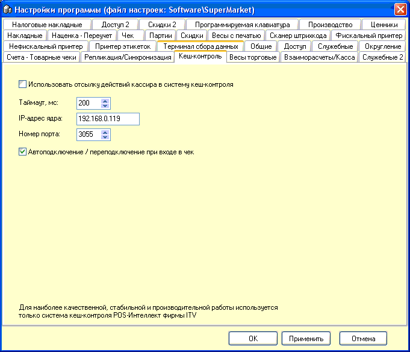

Использовать отсылку действий кассира в систему
кеш-контроля - активация возможности. Данная система представляет собой
логгирование действий операторов в магазине на сервер видеонаблюдения
Intellect-ITV, отсылаемые сообщения накладываются в виде титров на
соответствующую видеокартинку каждой кассы. Затем по ним можно осуществлять
поиск и анализ ситуаций в магазине.
Настройки подключения приведены как пример, в
конкретном магазине может потребоваться их изменение. За более подробными
тех.сведениями и консультациями обращайтесь в Ваш сервисный центр.